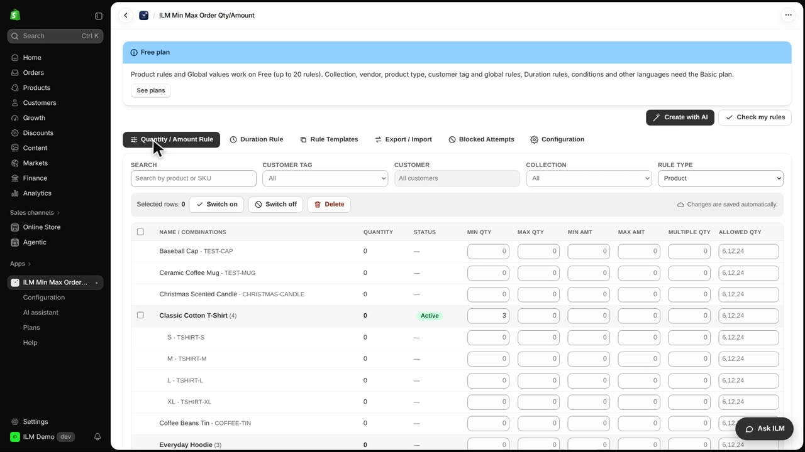
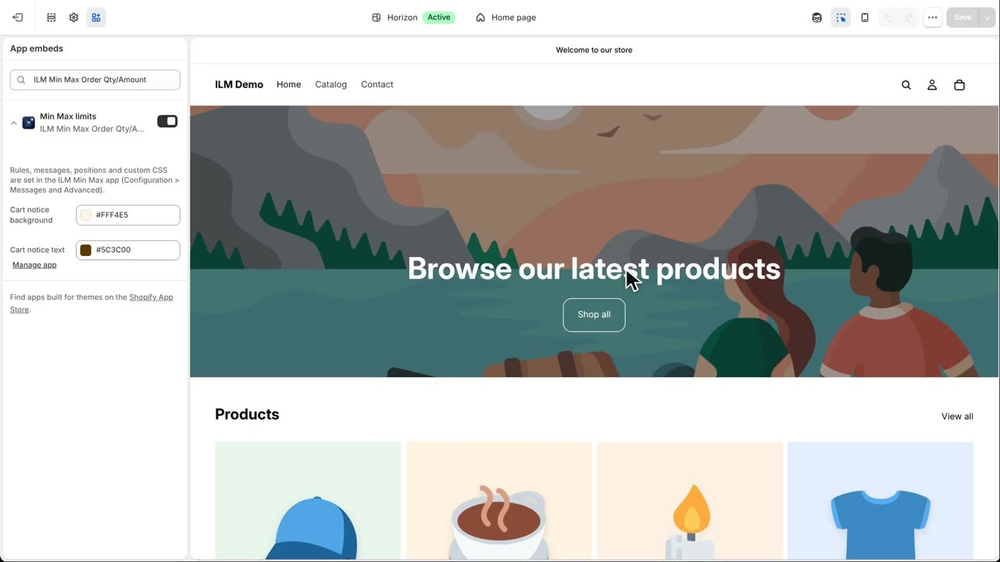
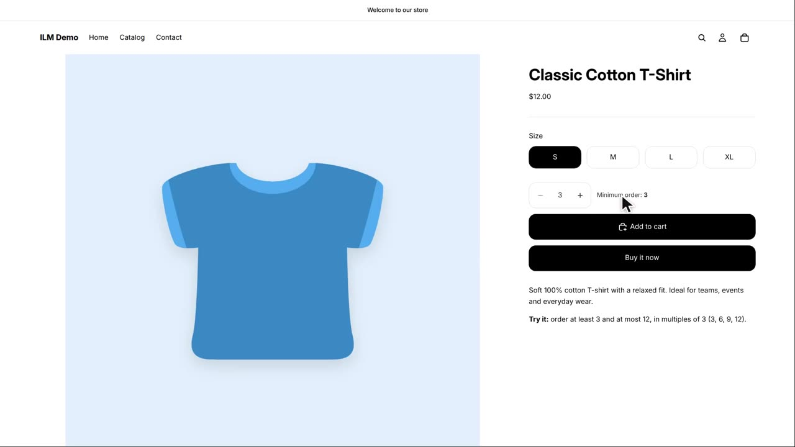

This lesson installs ILM Min Max Order Quantity and Amount, and gets it ready in your theme. The app lets you set minimum and maximum order quantities and amounts, so shoppers cannot order too little or too much. Today we install it on the ILM Demo store and set a first rule on the Classic Cotton T-shirt.
In the Shopify App Store, open ILM Min Max and click Install. Shopify shows what the app may do in your store. Click Install to continue.
The app opens inside your Shopify admin. The tabs at the top hold everything: rules, durations, templates, export, the blocked log and configuration. We will look at each of these in later lessons.

The checkout rule works at once. For the messages on product pages and in the cart, turn on the app embed. In Configuration, under Advanced, click Open theme editor.

The theme editor opens with Min Max limits already switched on. If the Save button is active, click Save.
Now set a first rule: the Classic Cotton T-shirt, at least three. In the app, search for the T-shirt and set Min Qty to three.
The product page shows the minimum. The app is ready. The next lessons show every option.
